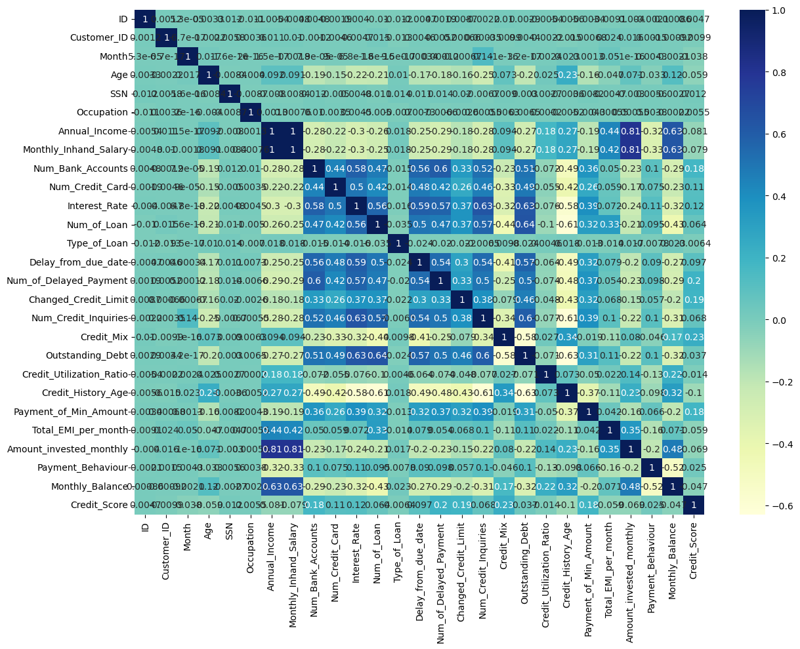
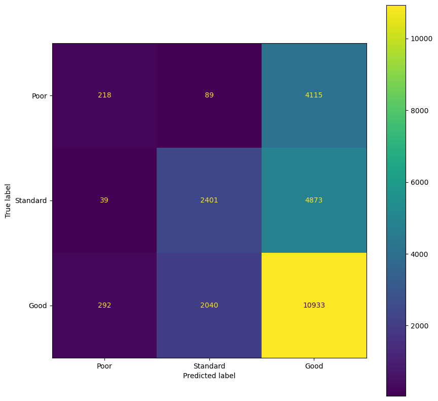
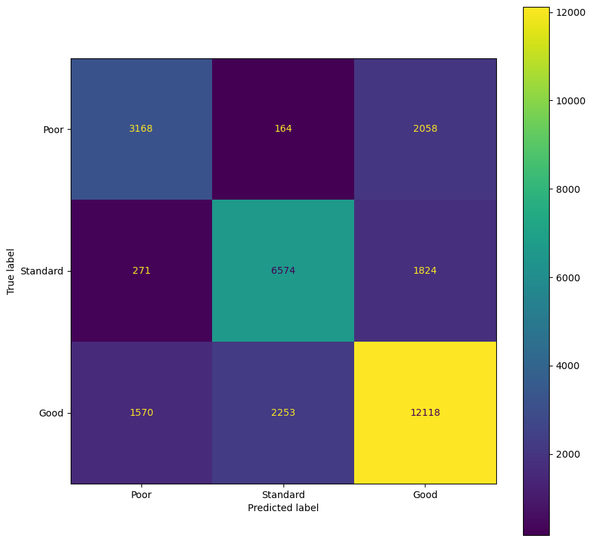

import numpy as np
import pandas as pd
import seaborn as sns
import matplotlib.pyplot as plt
from sklearn import metrics
from sklearn .metrics import accuracy_score
from sklearn.preprocessing import LabelEncoder as le # label encoder
from sklearn.model_selection import train_test_split # train & test split
from sklearn.neighbors import KNeighborsClassifier as knnClassifier # knn
from sklearn.linear_model import LogisticRegression as lgrClassifier # logistic regressionClassification and clustering
Predicting the credit Score
The two csv files (origin: kaggle) contain the training set (resp the validation set) about the clients from a “global finance company”.
Your goal is to use all available information to build a model to accurately predict the probability of default which is coded up as a qualitative variable with three values.
Import training set and validation sets
data=pd.read_csv("train.csv")
test=pd.read_csv("test.csv")Describe the dataset. How is the credit category encoded?
data.columnsIndex(['ID', 'Customer_ID', 'Month', 'Name', 'Age', 'SSN', 'Occupation',
'Annual_Income', 'Monthly_Inhand_Salary', 'Num_Bank_Accounts',
'Num_Credit_Card', 'Interest_Rate', 'Num_of_Loan', 'Type_of_Loan',
'Delay_from_due_date', 'Num_of_Delayed_Payment', 'Changed_Credit_Limit',
'Num_Credit_Inquiries', 'Credit_Mix', 'Outstanding_Debt',
'Credit_Utilization_Ratio', 'Credit_History_Age',
'Payment_of_Min_Amount', 'Total_EMI_per_month',
'Amount_invested_monthly', 'Payment_Behaviour', 'Monthly_Balance',
'Credit_Score'],
dtype='object')data.Payment_Behaviour.unique()array(['High_spent_Small_value_payments',
'Low_spent_Large_value_payments',
'Low_spent_Medium_value_payments',
'Low_spent_Small_value_payments',
'High_spent_Medium_value_payments',
'High_spent_Large_value_payments'], dtype=object)Let’s re rencode the string variables
data['Occupation'] = le().fit_transform(data['Occupation'])
data['Type_of_Loan'] = le().fit_transform(data['Type_of_Loan'])
data['Credit_Mix'] = le().fit_transform(data['Credit_Mix'])
data['Payment_of_Min_Amount'] = le().fit_transform(data['Payment_of_Min_Amount'])
data['Payment_Behaviour'] = le().fit_transform(data['Payment_Behaviour'])
data['Credit_Score'] = le().fit_transform(data['Credit_Score'])Credit_Score_le = le()plt.figure(figsize = (14,10))
sns.heatmap(data.corr() , annot = True , cmap = "YlGnBu")/tmp/ipykernel_221/4218269893.py:2: FutureWarning: The default value of numeric_only in DataFrame.corr is deprecated. In a future version, it will default to False. Select only valid columns or specify the value of numeric_only to silence this warning.
sns.heatmap(data.corr() , annot = True , cmap = "YlGnBu")<AxesSubplot: >
data| ID | Customer_ID | Month | Name | Age | SSN | Occupation | Annual_Income | Monthly_Inhand_Salary | Num_Bank_Accounts | ... | Credit_Mix | Outstanding_Debt | Credit_Utilization_Ratio | Credit_History_Age | Payment_of_Min_Amount | Total_EMI_per_month | Amount_invested_monthly | Payment_Behaviour | Monthly_Balance | Credit_Score | |
|---|---|---|---|---|---|---|---|---|---|---|---|---|---|---|---|---|---|---|---|---|---|
| 0 | 5634 | 3392 | 1 | Aaron Maashoh | 23.0 | 821000265.0 | 12 | 19114.12 | 1824.843333 | 3.0 | ... | 1 | 809.98 | 26.822620 | 265.0 | 1 | 49.574949 | 21.465380 | 2 | 312.494089 | 0 |
| 1 | 5635 | 3392 | 2 | Aaron Maashoh | 23.0 | 821000265.0 | 12 | 19114.12 | 1824.843333 | 3.0 | ... | 1 | 809.98 | 31.944960 | 266.0 | 1 | 49.574949 | 21.465380 | 3 | 284.629162 | 0 |
| 2 | 5636 | 3392 | 3 | Aaron Maashoh | 23.0 | 821000265.0 | 12 | 19114.12 | 1824.843333 | 3.0 | ... | 1 | 809.98 | 28.609352 | 267.0 | 1 | 49.574949 | 21.465380 | 4 | 331.209863 | 0 |
| 3 | 5637 | 3392 | 4 | Aaron Maashoh | 23.0 | 821000265.0 | 12 | 19114.12 | 1824.843333 | 3.0 | ... | 1 | 809.98 | 31.377862 | 268.0 | 1 | 49.574949 | 21.465380 | 5 | 223.451310 | 0 |
| 4 | 5638 | 3392 | 5 | Aaron Maashoh | 23.0 | 821000265.0 | 12 | 19114.12 | 1824.843333 | 3.0 | ... | 1 | 809.98 | 24.797347 | 269.0 | 1 | 49.574949 | 21.465380 | 1 | 341.489231 | 0 |
| ... | ... | ... | ... | ... | ... | ... | ... | ... | ... | ... | ... | ... | ... | ... | ... | ... | ... | ... | ... | ... | ... |
| 99995 | 155625 | 37932 | 4 | Nicks | 25.0 | 78735990.0 | 9 | 39628.99 | 3359.415833 | 4.0 | ... | 1 | 502.38 | 34.663572 | 378.0 | 1 | 35.104023 | 24.028477 | 0 | 479.866228 | 1 |
| 99996 | 155626 | 37932 | 5 | Nicks | 25.0 | 78735990.0 | 9 | 39628.99 | 3359.415833 | 4.0 | ... | 1 | 502.38 | 40.565631 | 379.0 | 1 | 35.104023 | 24.028477 | 1 | 496.651610 | 1 |
| 99997 | 155627 | 37932 | 6 | Nicks | 25.0 | 78735990.0 | 9 | 39628.99 | 3359.415833 | 4.0 | ... | 1 | 502.38 | 41.255522 | 380.0 | 1 | 35.104023 | 24.028477 | 0 | 516.809083 | 1 |
| 99998 | 155628 | 37932 | 7 | Nicks | 25.0 | 78735990.0 | 9 | 39628.99 | 3359.415833 | 4.0 | ... | 1 | 502.38 | 33.638208 | 381.0 | 1 | 35.104023 | 24.028477 | 3 | 319.164979 | 2 |
| 99999 | 155629 | 37932 | 8 | Nicks | 25.0 | 78735990.0 | 9 | 39628.99 | 3359.415833 | 4.0 | ... | 1 | 502.38 | 34.192463 | 382.0 | 1 | 35.104023 | 24.028477 | 1 | 393.673696 | 1 |
100000 rows × 28 columns
dataset_model = data[['Credit_Score','Changed_Credit_Limit', 'Payment_of_Min_Amount', 'Credit_Mix', 'Delay_from_due_date', 'Annual_Income', 'Monthly_Inhand_Salary', 'Age', 'Monthly_Balance', 'Num_of_Delayed_Payment', 'Outstanding_Debt', 'Payment_Behaviour', 'Credit_History_Age', 'Num_Bank_Accounts', 'Credit_Utilization_Ratio']]Make several plots about the dataset (histograms, correlation plots, …)_
x = dataset_model.drop(['Credit_Score'] , axis = 1).values
y = dataset_model['Credit_Score' ].valuesSplit the train dataset into a df_train and a df_test dataset.
x_train , x_test , y_train , y_test = train_test_split(x,y , test_size= 0.25 , random_state=42)
[x_train.shape, y_train.shape][(75000, 14), (75000,)]Implement a logistic regression.
lr = lgrClassifier(C = 100)lr.fit(x_train , y_train)/opt/conda/envs/escpython/lib/python3.10/site-packages/sklearn/linear_model/_logistic.py:458: ConvergenceWarning: lbfgs failed to converge (status=1):
STOP: TOTAL NO. of ITERATIONS REACHED LIMIT.
Increase the number of iterations (max_iter) or scale the data as shown in:
https://scikit-learn.org/stable/modules/preprocessing.html
Please also refer to the documentation for alternative solver options:
https://scikit-learn.org/stable/modules/linear_model.html#logistic-regression
n_iter_i = _check_optimize_result(LogisticRegression(C=100)In a Jupyter environment, please rerun this cell to show the HTML representation or trust the notebook.
On GitHub, the HTML representation is unable to render, please try loading this page with nbviewer.org.
LogisticRegression(C=100)
lr_score_test=lr.score(x_test , y_test)
lr_score_test0.54208Compute the confusion matrix using the test set. Comment
actual = y_test
predicted = lr.predict(x_test)
confusion_matrix = metrics.confusion_matrix(actual, predicted)
cm_display = metrics.ConfusionMatrixDisplay(confusion_matrix = confusion_matrix, display_labels = ['Poor', 'Standard','Good'])fig, ax = plt.subplots(figsize=(10,10))
ax.grid(False)
cm_display.plot(ax=ax)<sklearn.metrics._plot.confusion_matrix.ConfusionMatrixDisplay at 0x7f32e3692a10>
Perform the same analysis with other classification methods and compare their performance using the test set.
from sklearn.neighbors import KNeighborsClassifierx_train,x_test,y_train,y_test = train_test_split(x,y, test_size=0.3,random_state = 1234)knn = KNeighborsClassifier(n_neighbors=7)knn.fit(x_train , y_train)KNeighborsClassifier(n_neighbors=7)In a Jupyter environment, please rerun this cell to show the HTML representation or trust the notebook.
On GitHub, the HTML representation is unable to render, please try loading this page with nbviewer.org.
KNeighborsClassifier(n_neighbors=7)
knn_score_test=knn.score(x_test , y_test)
knn_score_test0.7286666666666667actual = y_test
predicted = knn.predict(x_test)
confusion_matrix = metrics.confusion_matrix(actual, predicted)
cm_display = metrics.ConfusionMatrixDisplay(confusion_matrix = confusion_matrix, display_labels = ['Poor', 'Standard','Good'])fig, ax = plt.subplots(figsize=(10,10))
ax.grid(False)
cm_display.plot(ax=ax)<sklearn.metrics._plot.confusion_matrix.ConfusionMatrixDisplay at 0x7f7ddeb3eb30>
Which one would you choose? Test its performance on the validation set
Segmenting the bank clients
With the same database, without using the credit score, implement a k-means clustering algorithm.
Are the clusters related to the credit score?